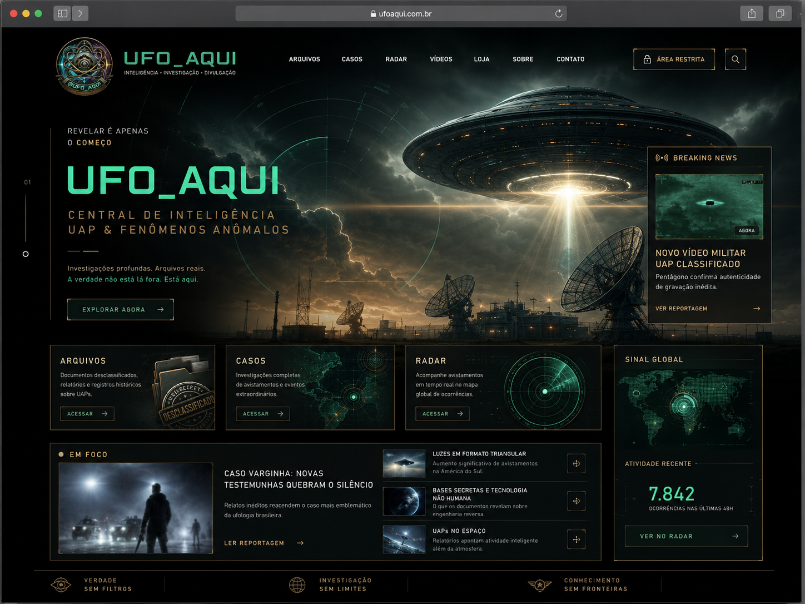
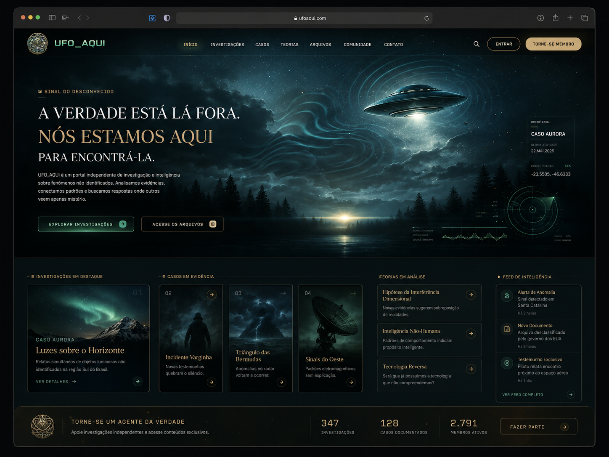
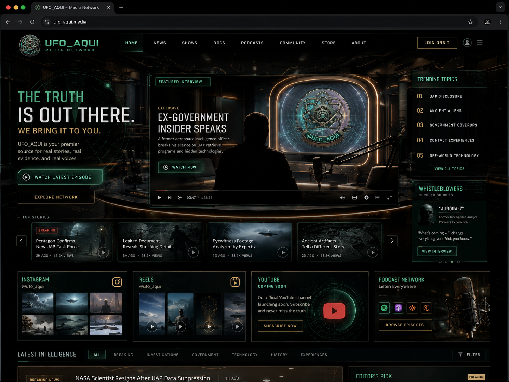

Arquivo 01

Sinal do desconhecido
A verdade está lá fora. Nós estamos aqui para encontrá-la.
Investigamos arquivos, relatos, documentos, padrões e sinais sobre UFOs, UAPs e fenômenos que desafiam explicações simples.
146arquivos analisados
38casos monitorados
06cenas 360°
Arquivo 02
Casos
Linha do tempo de eventos, avistamentos, relatos militares, civis e históricos. Ver casosArquivo 03
Radar
Monitoramento de notícias, tendências, falas políticas e atualizações do disclosure. Abrir radarArquivo 04
Experiências 360°
Ambientes imersivos para explorar bases, arquivos e zonas de anomalia. Explorar 360°Em foco
Quando o oficial não explica, a investigação começa.

Em análise
O prazo foi ignorado: os 46 vídeos de UAPs que ainda não vieram
O Congresso cobrou arquivos. O prazo passou. A resposta oficial agora envolve AARO, Casa Branca e múltiplas agências.
Ler análise- 01Trump promete liberar arquivos UFO "em breve"
- 02AARO coordena novo lote de registros
- 03Congressistas citam vídeos sem explicação simples
Exploração imersiva
Explore o desconhecido em 360°
Entre em ambientes inspirados em instalações secretas, salas de monitoramento, missões espaciais, arquivos vazados e zonas de anomalia.
Arquivo vivo
Dossiês, fontes e hipóteses classificados por status editorial.
Linha do tempo
Casos brasileiros e internacionais no mapa da vigília.
Radar UFO_AQUI
O desconhecido em tempo real.
Última atualização:

Podcast UFO_AQUI
Conversas, análises e sátiras investigativas sobre disclosure.
Um espaço preparado para YouTube, cortes, entrevistas, quadros fixos e futuros episódios sobre política UAP, ciência, ufologia e cultura do desconhecido.
Disclosure da Semana
Arquivo ou Lenda?
Radar Político UAP
Casos Brasileiros
Inscrever-se
Comunidade
Faça parte da vigília.
Acompanhe investigações, envie relatos, participe de enquetes e ajude a mapear padrões sobre fenômenos não identificados.
Análise UFO_AQUI
Os 46 vídeos UAP e a engenharia da espera
Esta primeira publicação organiza o caso como um dossiê editorial: o que foi cobrado, quem aparece na cadeia institucional, quais pontos exigem fonte pública e onde começa a especulação. Nem tudo é prova. Mas tudo merece análise.
Missão
Curadoria, cultura visual e pensamento crítico para o disclosure brasileiro.
O UFO_AQUI nasce para organizar, investigar e traduzir o movimento global de disclosure para o público brasileiro, unindo estética cinematográfica, curadoria de fontes, cultura digital e investigação independente.
Acesso em implantação
Área restrita
Canal reservado para comunidade, relatos, materiais em revisão e missões editoriais.